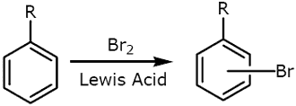
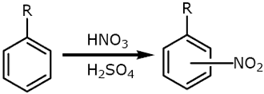

Here are some data illustrating the influence of substituents groups on the rates and the regioselectivities of various electrophilic aromatic substitution reactions. The trend discussed in class is shown qualitatively in the chart below, which progresses from most deactivating to most activating:
|  |  | |||
| Aryl compound | Relative Rate | Aryl compound | Relative Rate | |
| Benzene | 1 |
Phenol | 1000 |
|
| Toluene | 600 |
Benzene | 1 |
|
| Anisole | 109 |
Chlorobenzene | 0.033 |
|
| N,N-Dimethylaniline | 1014 |
Nitrobenzene | 6x10-8 |
|
| Substituent R | NO2 Group Positioning |
||
Ortho |
Meta |
Para |
|
| o,p-Directing activators | |||
| �OH | 50% |
0% |
50% |
| �NHCOCH3 | 19% |
2% |
79% |
| �CH3 | 63% |
3% |
34% |
| o,p-Directing deactivators | |||
| �Cl | 35% |
1% |
64% |
| �Br | 43% |
1% |
56% |
| �I | 45% |
1% |
54% |
| m-Directing deactivators | |||
| �COCH3 | 26% |
72% |
2% |
| �CN | 17% |
81% |
2% |
| �COOH | 22% |
76% |
2% |
| �NO2 | 7% |
91% |
2% |
What do we mean by �strong�, �medium� or �weak� activating or deactivating effects? A few specific numbers will give you a sense of the general trend. Note that these are relative rates: the reaction rate for benzene has been taken to be �1� for each case, but you should not assume that this means that bromination and nitration of benzene have the same rate. The two charts are on different scales and cannot be precisely matched up.
In simple aryl compounds having only one substituent and in which there is not significant steric hindrance, electrophilic aromatic substitution does not generally give exclusively one product, but the preferences for ortho/para or meta-direction are generally quite clear, as the following data for room-temp nitration show.